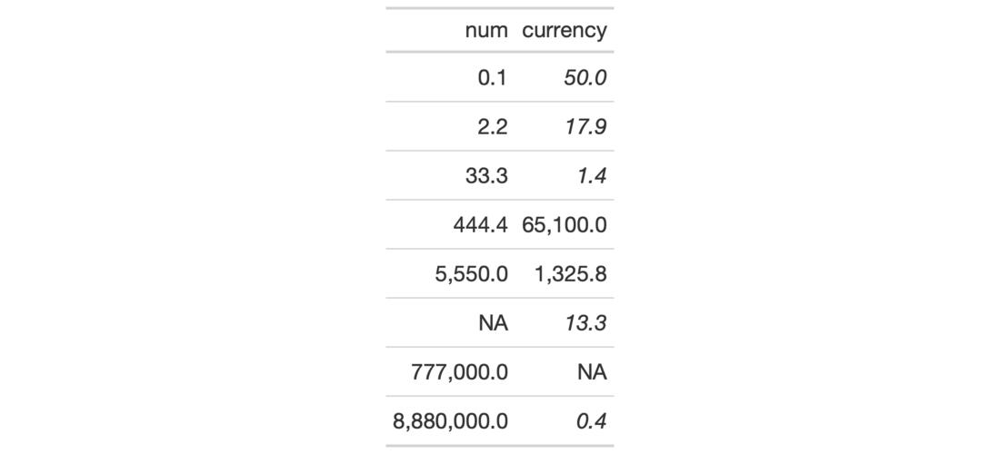

| cell_text {gt} | R Documentation |
This helper function is to be used with the tab_style() function, which
itself allows for the setting of custom styles to one or more cells. We can
also define several styles within a single call of cell_text() and
tab_style() will reliably apply those styles to the targeted element.
cell_text( color = NULL, font = NULL, size = NULL, align = NULL, v_align = NULL, style = NULL, weight = NULL, stretch = NULL, indent = NULL, decorate = NULL, transform = NULL )
color |
The text color. |
font |
The font or collection of fonts (subsequent font names are) used as fallbacks. |
size |
The size of the font. Can be provided as a number that is assumed
to represent |
align |
The text alignment. Can be one of either |
v_align |
The vertical alignment of the text in the cell. Options are
|
style |
The text style. Can be one of either |
weight |
The weight of the font. Can be a text-based keyword such as
|
stretch |
Allows for text to either be condensed or expanded. We can use
one of the following text-based keywords to describe the degree of
condensation/expansion: |
indent |
The indentation of the text. Can be provided as a number that
is assumed to represent |
decorate |
allows for text decoration effect to be applied. Here, we can
use |
transform |
Allows for the transformation of text. Options are
|
A list object of class cell_styles.

7-19
Other Helper Functions:
adjust_luminance(),
cell_borders(),
cell_fill(),
cells_body(),
cells_column_labels(),
cells_column_spanners(),
cells_footnotes(),
cells_grand_summary(),
cells_row_groups(),
cells_source_notes(),
cells_stub_grand_summary(),
cells_stub_summary(),
cells_stubhead(),
cells_stub(),
cells_summary(),
cells_title(),
currency(),
default_fonts(),
escape_latex(),
google_font(),
gt_latex_dependencies(),
html(),
md(),
pct(),
px(),
random_id()
# Use `exibble` to create a gt table;
# add styles with `tab_style()` and
# the `cell_text()` helper function
tab_1 <-
exibble %>%
dplyr::select(num, currency) %>%
gt() %>%
fmt_number(
columns = c(num, currency),
decimals = 1
) %>%
tab_style(
style = cell_text(weight = "bold"),
locations = cells_body(
columns = num,
rows = num >= 5000)
) %>%
tab_style(
style = cell_text(style = "italic"),
locations = cells_body(
columns = currency,
rows = currency < 100
)
)